Screenshots
 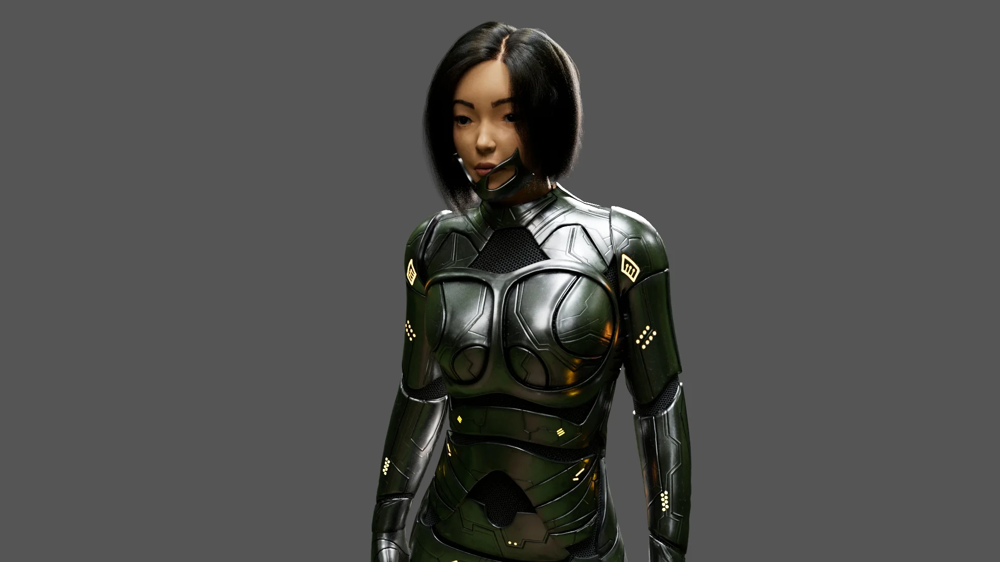
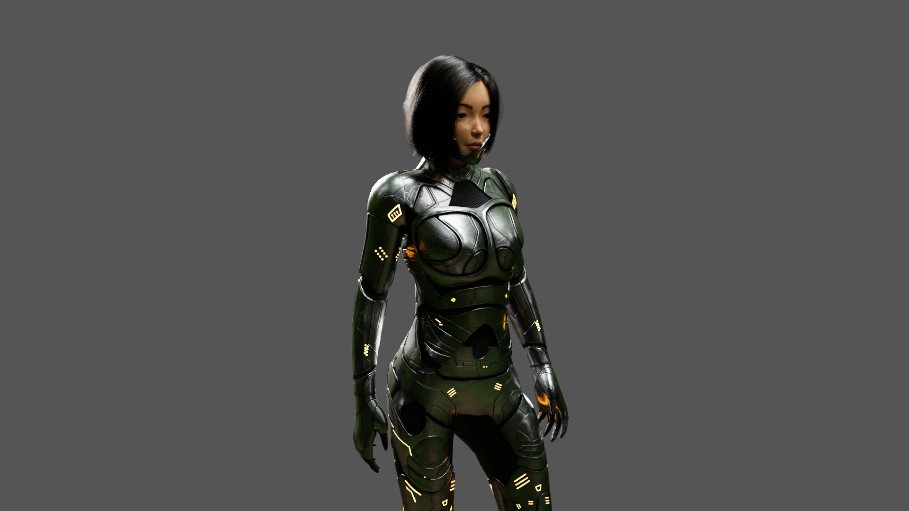
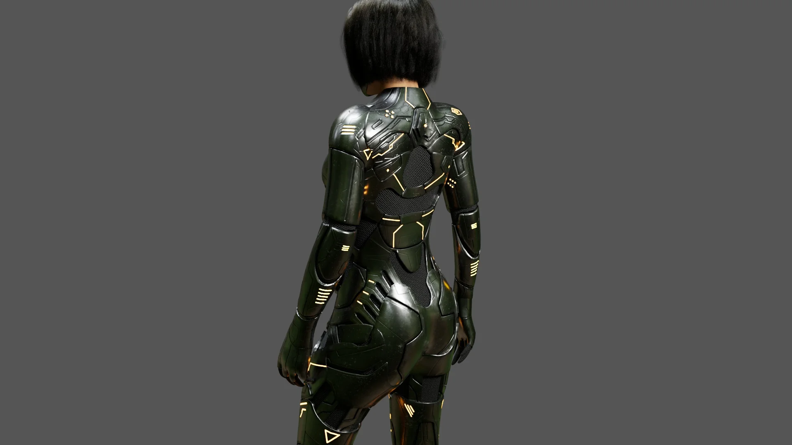
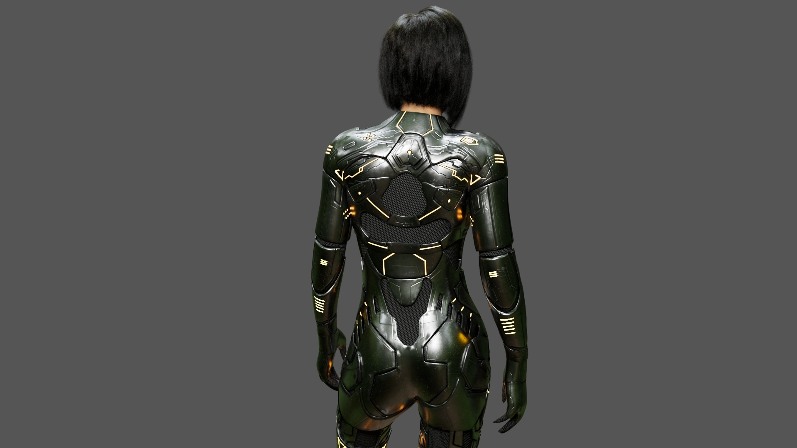
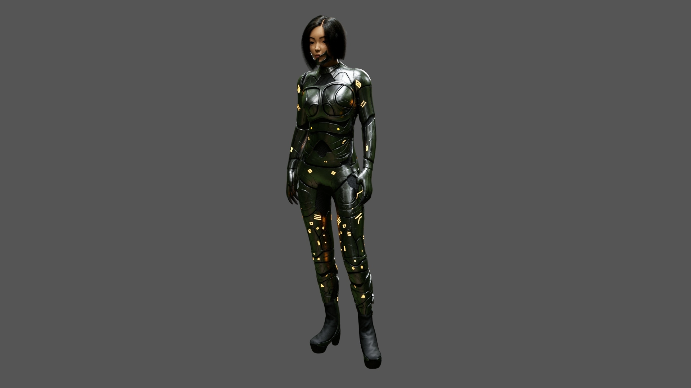
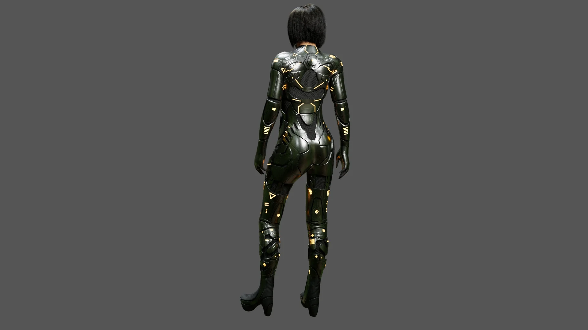
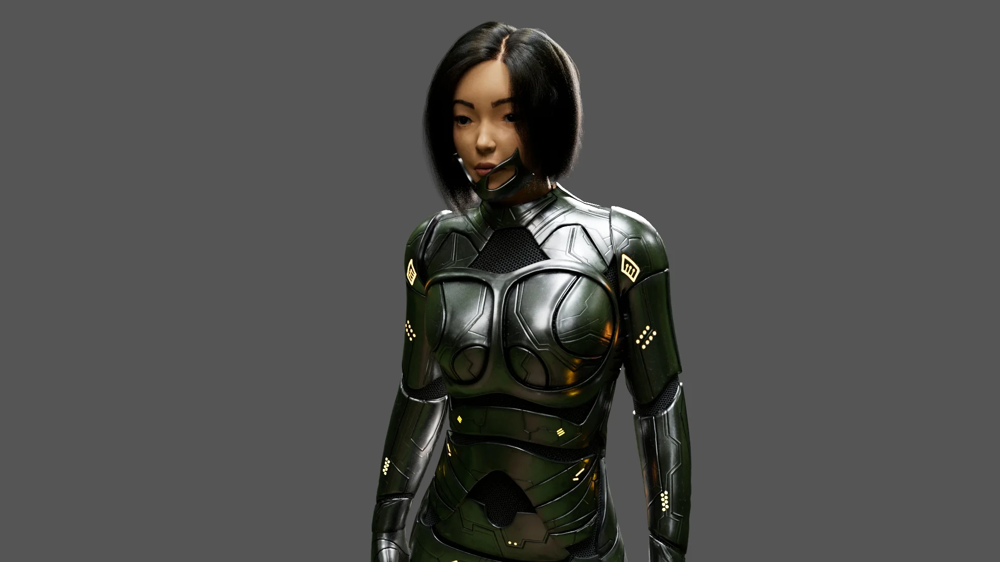
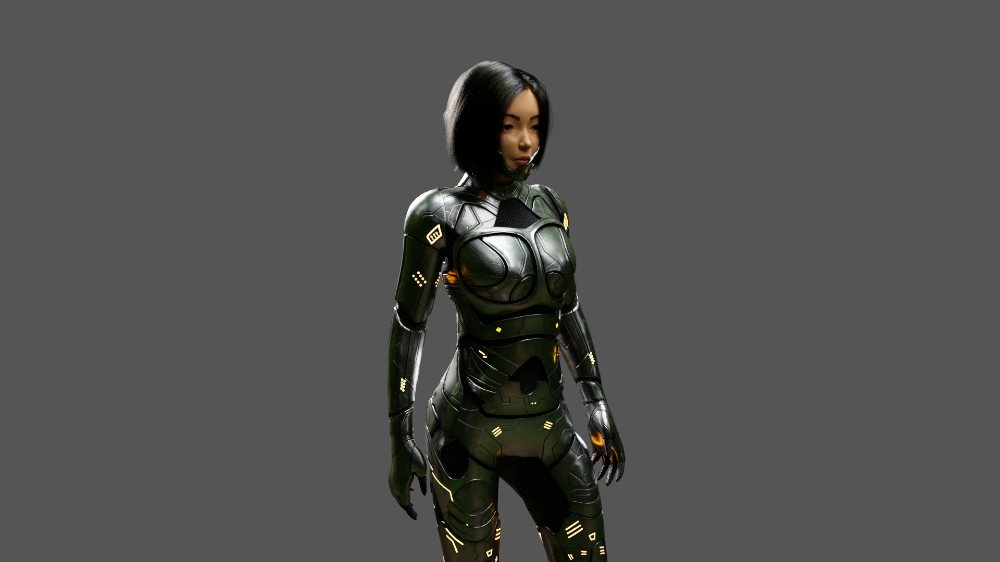
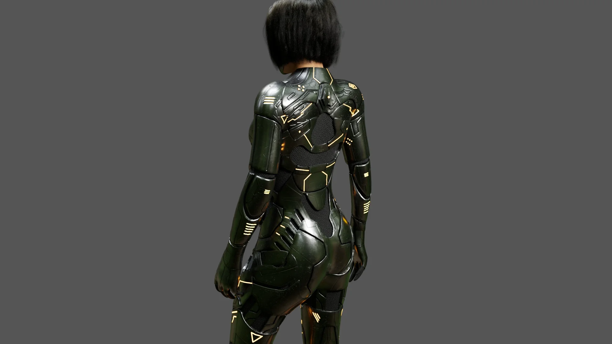
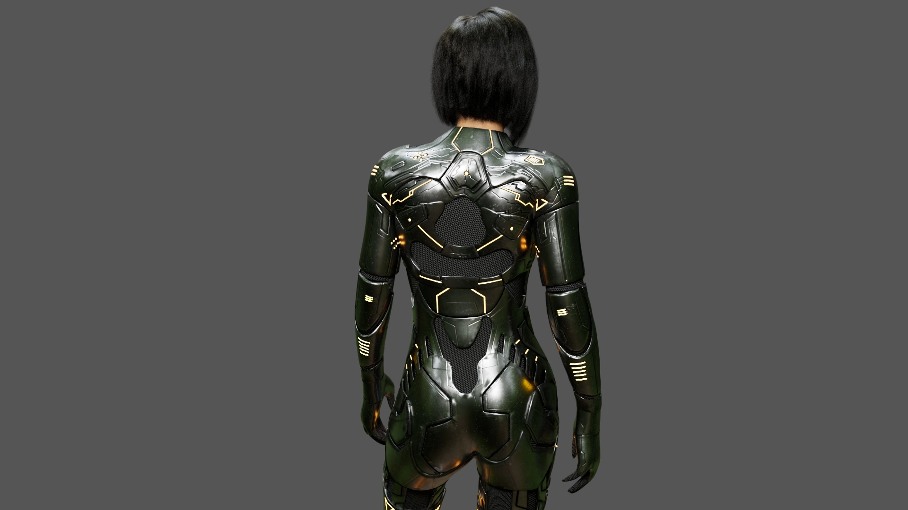
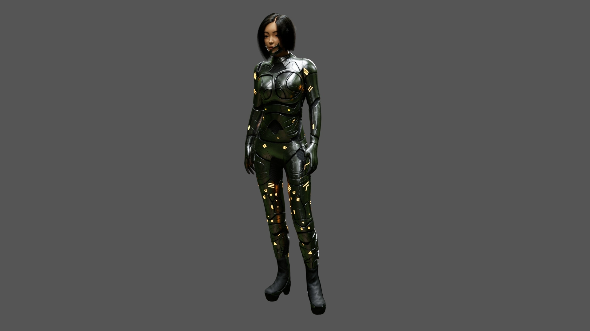
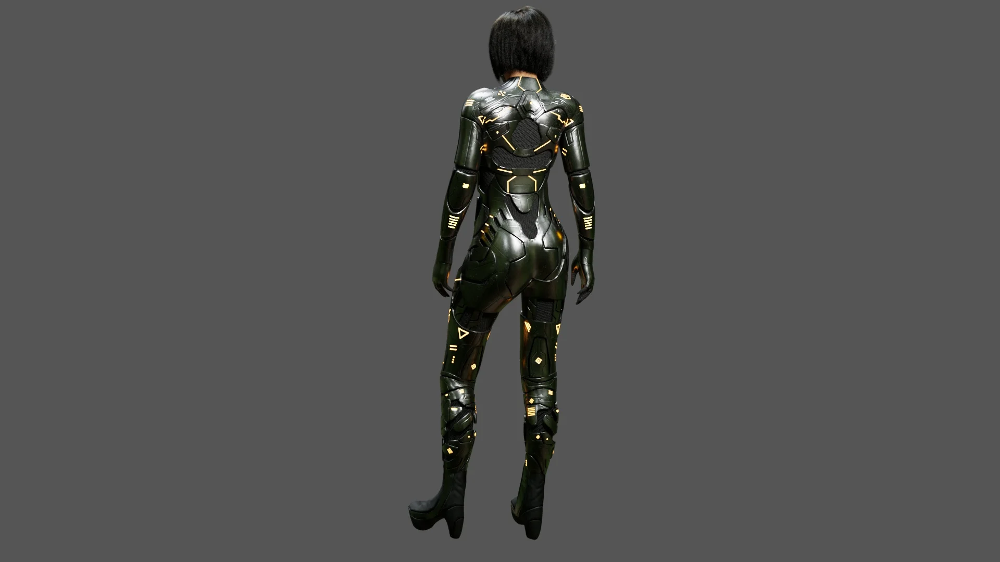
This is my most ambitious project so far. It was one of the projects that I made during my master degree
at Voxel School in Spain. We had to make a realistic character and I decided to make a female character related
to the Sci-Fi world.
The model and armor were sculpted in Zbrush. I used Substance Painter for the texturing of the armor and Photoshop/Zbrush Polypaint for
the texturing of the skin and eyes. For the hair I used Xgen and for the final composition and lighting, Maya.
Released: 2022
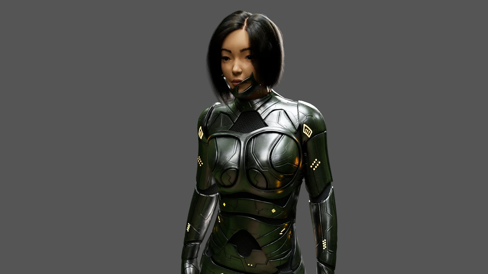
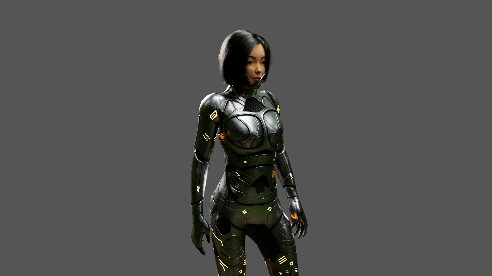
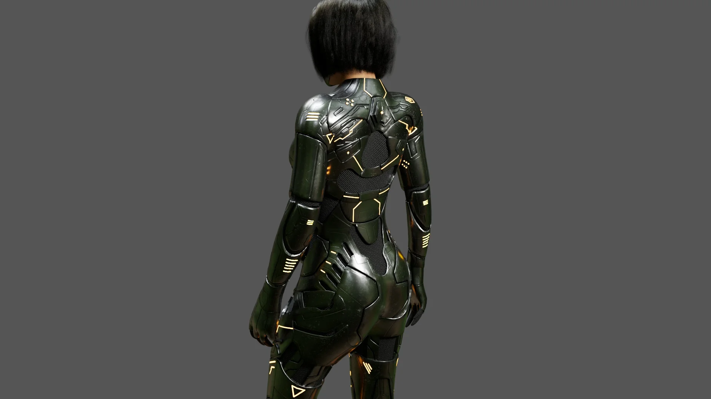
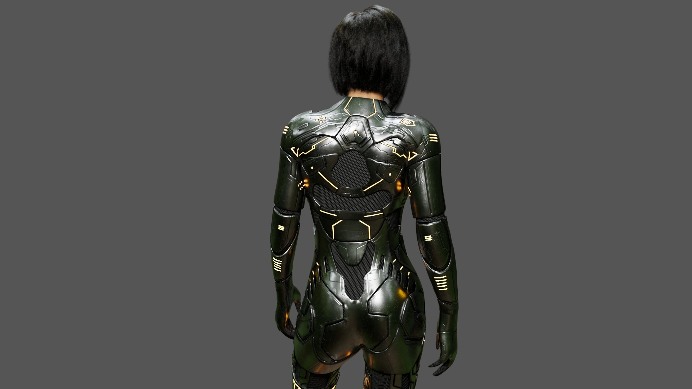
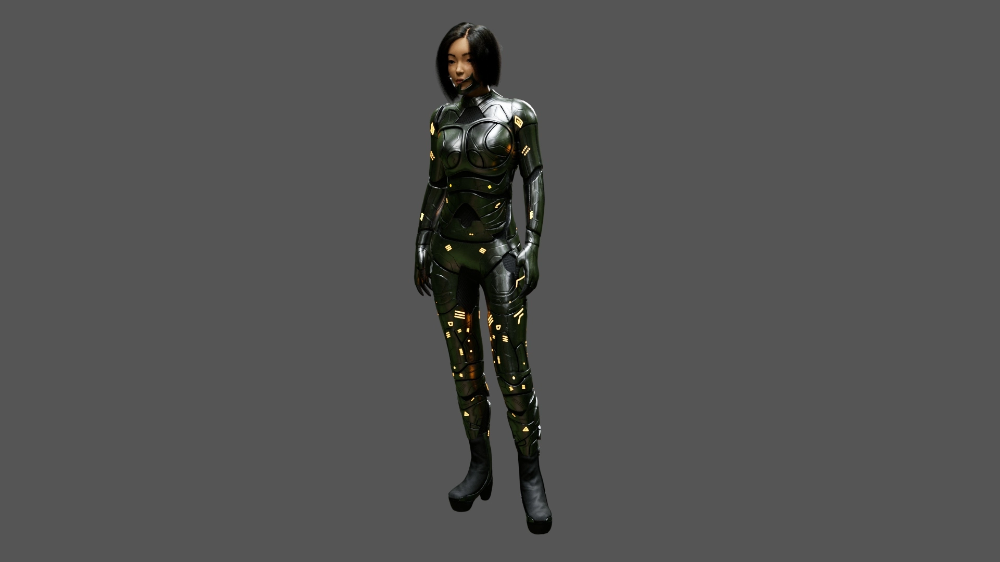
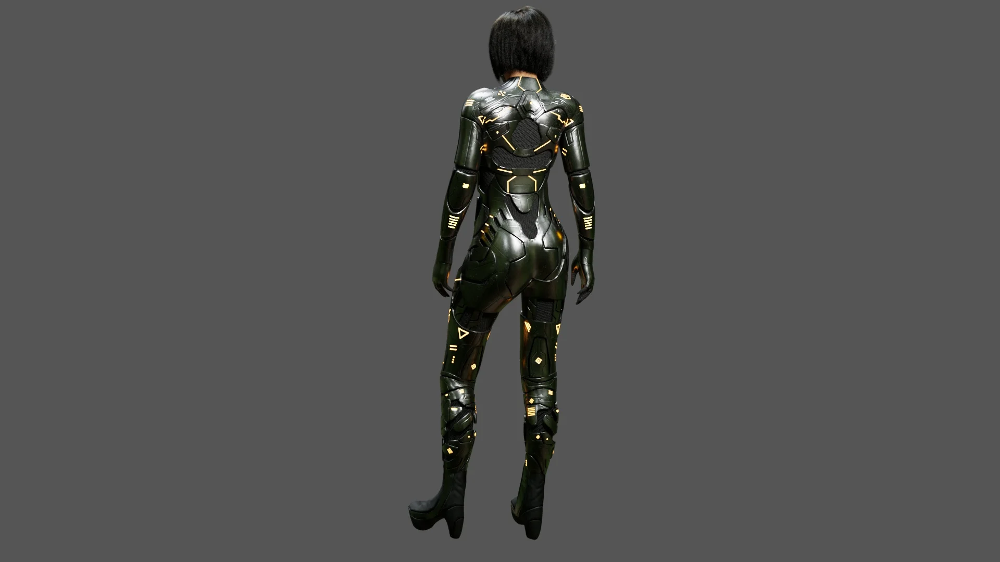